lineare Unabhängigkeit von Eigenvektoren für verschiedene Eigenwerte
1. Satz
Sei  ein K-Vektorraum und
ein K-Vektorraum und  , so gilt für Eigenvektoren 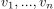 füw paarweise verschiedene Eigenwerte 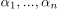, dass lineare unabhängig sind.
, so gilt für Eigenvektoren 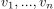 füw paarweise verschiedene Eigenwerte 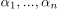, dass lineare unabhängig sind.
2. Beweis
2.1. induktionsanfang
Nach Definition ist 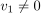 (vgl. Eigenvektor) und daraus folgt lineare Unabhängigkeit.
2.2. induktionsschritt
Seien für 
 lineare unabhängig.
Sei 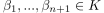 mit 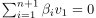 so folgt:
lineare unabhängig.
Sei 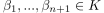 mit 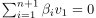 so folgt:
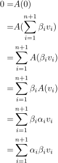
1
Desweiteren gilt:
 2
2
Daraus folgt für die Differenz:
 3
3
Nach Induktionsannahme sind lineare unabhängig.
Damit gilt 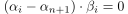
Da wir annehmen, dass die Eigenwerte paarweise verschieden sind, gilt insbesondere für 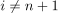 e 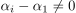.
Daraus folgt  für und dann auch für 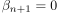
für und dann auch für 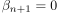